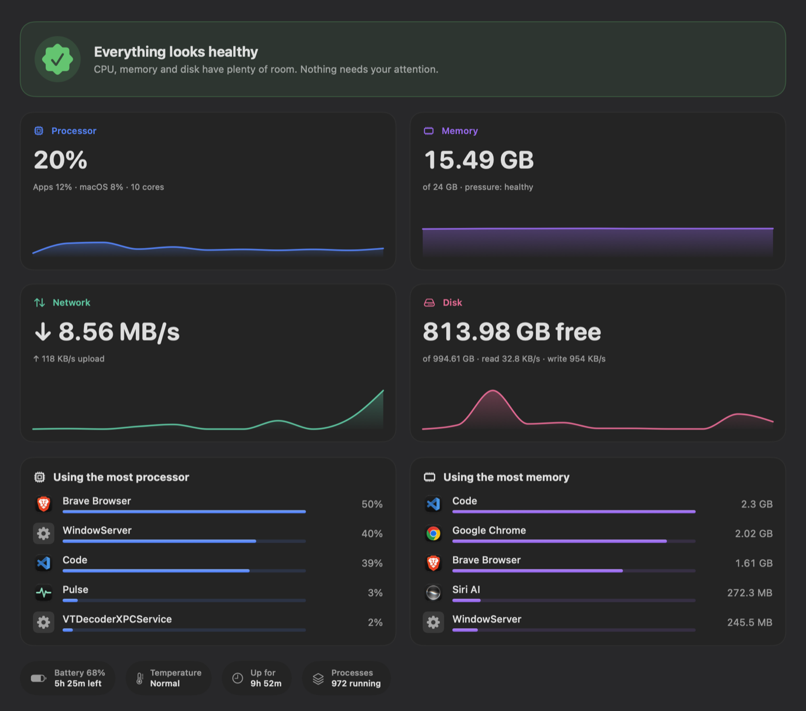
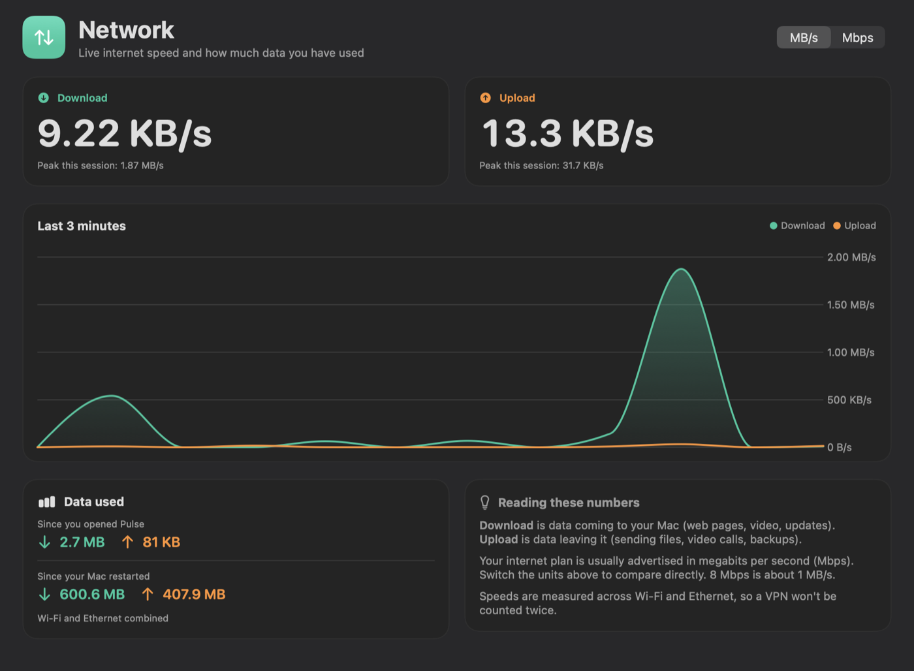
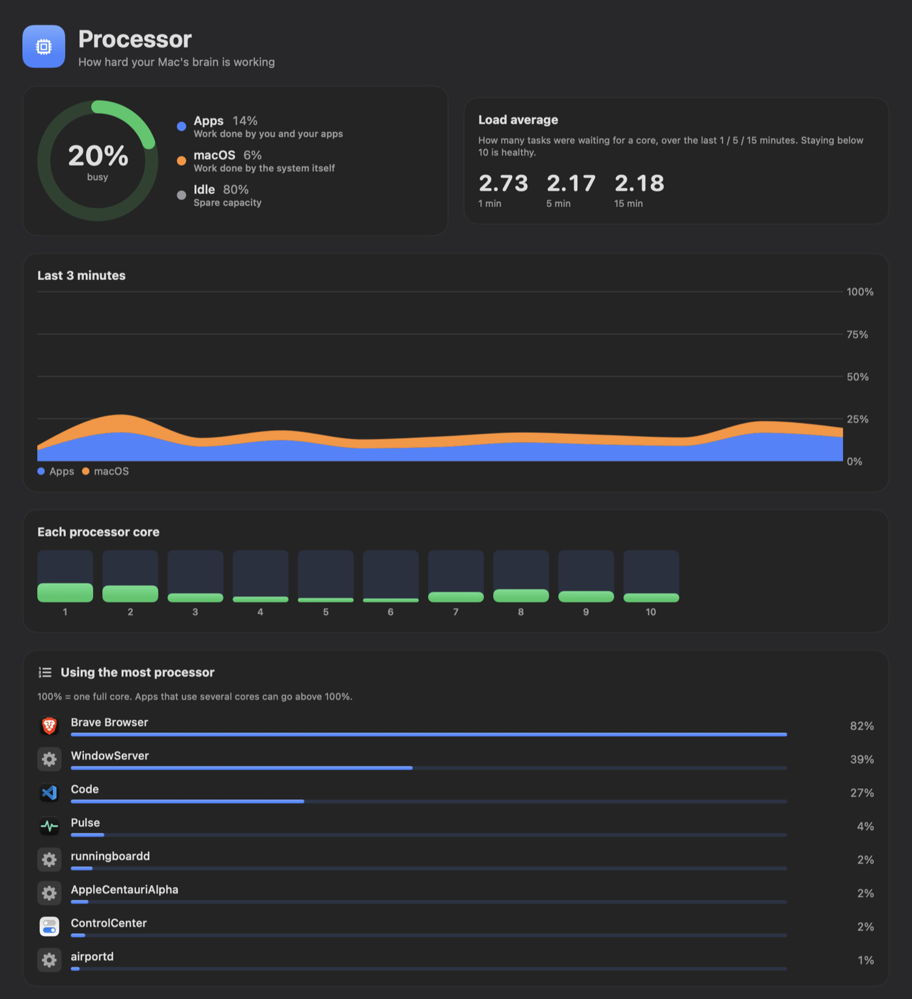
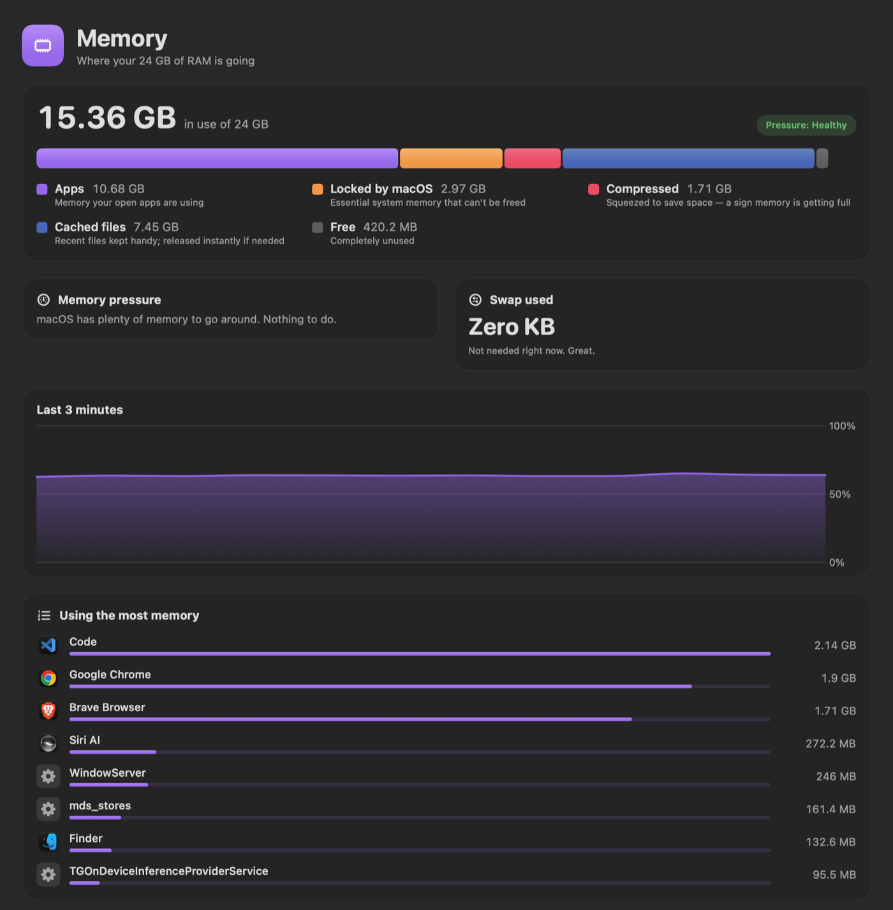

Pulse
A friendlier Activity Monitor that tells you what your Mac is actually doing.
Live CPU, memory, disk and network speed — explained in plain English instead of jargon. See at a glance whether your Mac is healthy, which app is slowing it down, and how fast your internet is, from the app, the menu bar, or a desktop widget. It only reads system statistics: it never quits or changes anything.

A one-line verdict — “Everything looks healthy” or “Memory is getting tight” — and, when something is wrong, which app is responsible.
Download and upload speed, a 3-minute graph, session peaks and data totals. Switch between MB/s and Mbps to compare with your internet plan.
Small, medium and large widgets show processor, memory, disk, battery and network speed without opening the app.
Download stacked above upload in the menu bar, plus a quick panel with CPU, memory and disk rings and your busiest apps.
Memory is split into “Apps / Locked by macOS / Compressed / Cached / Free” with a sentence on what each means. Common system processes are described in plain words.
No kill or quit buttons, no background services, no data leaves your Mac. It can look, but it can’t touch.



Downloads the latest release, installs it into /Applications and opens it. Needs macOS 14 or later.
Right-click the desktop → Edit Widgets → System Pulse, then pick small, medium or large.
Pulse is ad-hoc signed rather than notarized, so the one-line installer above is the smoothest route. If you download the zip in a browser instead, macOS will ask you to right-click the app and choose Open the first time. You can also build it from source with just the Xcode Command Line Tools: ./build.sh install.
- CPU from per-core tick counters (host_processor_info).
- Memory from host_statistics64, using Activity Monitor’s own definitions of App, Wired, Compressed and Cached.
- Per-process figures from proc_pid_rusage — the physical footprint macOS itself reports.
- Disk and battery through IOKit.
- Reads 64-bit interface counters from the routing socket (NET_RT_IFLIST2). The common getifaddrs counters are 32-bit and wrap around every 4 GB, which would show false spikes on fast connections.
- Counts physical links only, so a VPN tunnel isn’t counted twice.
- Uses roughly 4–5% of a single core with the window open.
- The costly process scan pauses when no Pulse window is on screen; the menu bar speed only needs a ~6 ms system sample each second.
- Root-owned processes (like WindowServer) can’t be read through libproc, so they’re filled in via the system’s setuid ps — still strictly read-only.
- No per-app network usage. Prototyping it with nettop cost about 1.3 CPU cores continuously — too heavy for a monitor — so I removed it.
- Not on the App Store. The sandbox it requires would block reading other processes’ stats, which is the core feature.
- Built without Xcode. A single build.sh compiles a universal (Apple Silicon + Intel) binary, assembles the app and widget extension, and signs them.
Pulse is open source. Issues, ideas and pull requests are welcome.